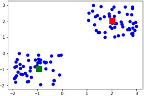
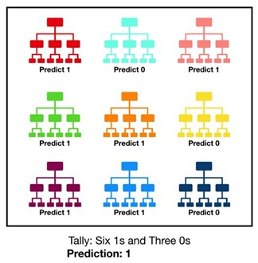

Credit Card Fraud Detection Using Predictive Modelling
ABSTRACT
Crores of rupees of loss are caused every annum by fraudulent credit card transactions. The system of efficient fraud detection algorithms is a key to decreasing these loss and frauds, and more algorithms depend on machine learning techniques to assist fraud investigators. The system of fraud detection algorithms is challenging due to the unbalanced distribution of data, the highly unbalanced classes distributions and the availability of few transactions labeled by fraud investigators. At the same time public data are hardly available for confidential issues.
A. INTRODUCTION
Today, all around the world, data is available very easily, from small to big organizations are storing information that has high volume, variety, speed, and worth [1] [2]. Early analysis of big data was centered primarily on data volume, for example, general public database, biometrics, financial analysis [3]. For frauds, the credit card is an easy and friendly target because without any risk a significant amount of money is obtained within a short period [4]. Credit cards are used for purchasing goods and services with the help of a virtual card for online transactions and a physical card for offline transactions [5]. In a physical card-based purchase, the card user presents his card physically to a merchant for making a payment. To carry out fraudulent transactions in this kind of purchase, an attacker has to steal the card. If the card user does not realize the loss of the card, it can lead to a substantial financial loss to the credit card providers [6]. In online payment mode, attackers need only a few pieces of information for doing fraudulent transactions, such as a security code, card number, expiration date, etc. In this method, mainly transactions will be done through online or telephone [7].
B. RELATED WORK
In the development of modern technology, financial frauds are increasing significantly and hence fraud detection is an important area. Fraud detection is very important to save the financial losses for the banks as they issue credit cards to customers. Without knowledge of cardholder use of the card information is a credit card fraud. There are two types of fraud detection approaches: misuse detection and anomaly detection [1]. In misuse detection, the system trains on normal and fake transactions, it will identify the known frauds. In anomaly detection, normal transactions are used for training so it has the potential to identify novel frauds. Leila et.al had proposed a method which used anomaly detection techniques that extract the inherent pattern of aggregated daily purchases of cardholders from a credit card time series and use this pattern for earlier fraud detection [2]. Sanchez ´ et al. [3] described the method for fraud detection from transactional databases using fuzzy association rule mining in extracting knowledge. This method is very effective and optimizes the execution time and reduces the excessive generation of rules. Panigrahi et al. [4] proposed the new approach using rule-based filtering, Dempster-Shafer theory, transaction history database, and Bayesian learner. The initial belief about each incoming transaction can be computed by coming multiple evidences from the rule-based component by using Dempster’s rule. S. Maes et al. [5] described the fraud detection system by using BBN and ANN. They found that BBN gives better results than ANN. In BNN training period is short as compared to ANN. Chen et al. [6][11] suggested the new method for fraud detection in which QRT data is collected by using an online questionnaire. A support vector machine (SVM) is used to train the data and develop the QRT models which are used to predict new transactions that whether it is fraud or not. The problem of the protection of a passive RFID network from intruders was investigated by Tsiropoulou et al.[12]. They have suggested the association of a utility function with RFID tags with two goals, one is proper demodulation of signal by the reader and the second is to categorize them as normal or intruder tags. In [13] Dai et al. have analyzed the advantages of using blockchain in cybersecurity and summarized the current research and application. In [14] Berkowsky and Hayajneh have discussed the security issues with the certificate authority model. They have discussed problems both in its design and implementation.
C. ALGORITHM USED
1. K-MEANS:
K-means clustering is one of the simplest and popular unsupervised machine learning algorithms.
Typically, unsupervised algorithms make inferences from datasets using only input vectors without referring
to known, or labeled, outcomes. The objective of K-means is simple: group similar data points together
and discover underlying patterns. To achieve this objective, K-means looks for a fixed number (k) of clusters in a dataset.
A cluster refers to a collection of data points aggregated together because of certain similarities.
You’ll define a target number k, which refers to the number of centroids you need in the dataset.
A centroid is the imaginary or real location representing the center of the cluster.
Every data point is allocated to each of the clusters through reducing the in-cluster sum of squares.
In other words, the K-means algorithm identifies k number of centroids, and then allocates every data point to
the nearest cluster, while keeping the centroids as small as possible. The ‘means’ in the K-means refers to
averaging of the data; that is, finding the centroid. How the K-means algorithm works:
To process the learning data, the K-means algorithm in data mining starts with a first group of
randomly selected centroids, which are used as the beginning points for every cluster,
and then performs iterative (repetitive) calculations to optimize the positions of the
centroids.
It halts creating and optimizing clusters when either:
- The centroids have stabilized — there is no change in their values because the clustering has been successful.
- The defined number of iterations has been achieved.

2. RANDOM FOREST CLASSIFIER
Data science provides a plethora of classification algorithms such as logistic regression, support vector machine, naive Bayes classifier, and decision trees. But near the top of the classifier hierarchy is the random forest classifier (there is also the random forest regressor but that is a topic for another day). Random forest, like its name implies, consists of a large number of individual decision trees that operate as an ensemble. Each individual tree in the random forest spits out a class prediction and the class with the most votes becomes our model’s prediction.
CONCLUSION
In this paper, we developed a novel method for fraud detection, where customers are grouped based on their transactions and extract behavioral patterns to develop a profile for every cardholder. Then different classifiers are applied on three different groups later rating scores are generated for every type of classifier. This dynamic changes in parameters lead the system to adapt to new cardholder's transaction behavior timely. Followed by a feedback mechanism to solve the problem of concept drift. We observed that the Matthews Correlation Coefficient was the better parameter to deal with imbalance dataset. MCC was not the only solution. By applying the k-means, we tried balancing the dataset, where we found that the classifiers were performing better than before. The other way of handling imbalance dataset is to use random forest classifiers like decision tree classifier. We finally observed that decision tree and random forest are the algorithms that gave better results.